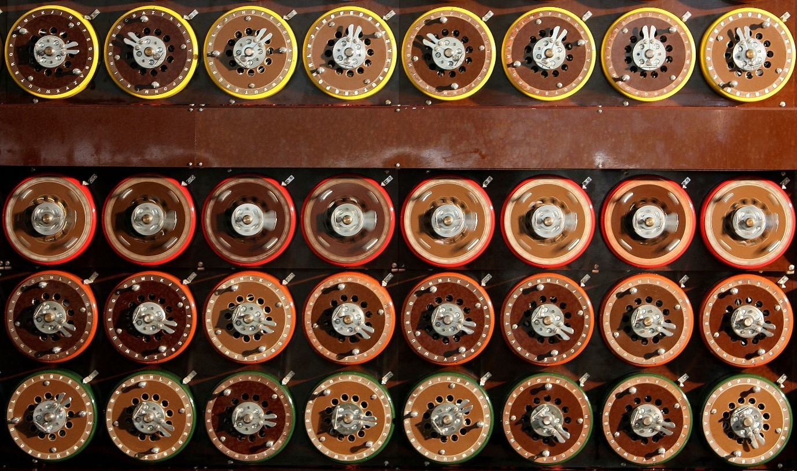

La programación informática es un campo dominado por los hombres, ¿no es así?
Pues bien, en términos absolutos es así. Los datos de la Oficina de Estadísticas Laborales de Estados Unidos muestra que el 73% de los trabajadores de la informática de Estados Unidos son programadores masculinos. Al otro lado de la tecnología en general, las mujeres están poco representadas.
Sin embargo, una investigación reciente sugiere que las mujeres son consideradas mejores programadoras- pero sólo si ocultan su género.
A continuación destacamos los perfiles de las cinco mujeres que han hecho contribuciones significativas a este campo – y de hecho ayudaron a cambiar el mundo.
Margaret Hamilton fue directora de ingeniería de software para el proyecto que escribió el código de la Guía de Apollo Computer (AGC). Desarrollado en el Laboratorio de Instrumentación del MIT para la misión Apolo 11, los programadores, literalmente, tuvieron que empezar de cero.
El equipo escribió el código para el primer ordenador portátil. Su trabajo hizo posible el primer alunizaje y dio lugar a una nueva industria. Hamilton se convirtió en una experta en programación de sistemas, pero como ella explicó a Wired :
“Cuando llegué por primera vez, nadie sabía qué era lo que estábamos haciendo. Era como el Lejano Oeste. No había reglas. Todo lo aprendimos por nosotros mismos.”
La contralmirante Dra. Grace Murray Hopper fue pionera en el desarrollo de lenguajes de programación accesibles escritos en Inglés.
Estaba convencida que la informática debía extenderse a las aplicaciones de negocio no científicas y requirió lenguajes de programación más simples. Partía de la idea de que los ordenadores no entienden Inglés, y llevó años antes de que se aceptaran sus ideas.
Pero a través de su perseverancia desarrolló un medio de programación utilizando palabras en lugar de números – el conocido como lenguaje COBOL ( Co mmon B usiness O rientated L anguage).
Ella se describe en el show televisivo de David Letterman como la “Reina de Software”.
Se trata de un grupo de seis mujeres jóvenes que desarrollaron el primer ordenador programable totalmente electrónico como parte del programa militar de la Segunda Guerra Mundial del ejército de Estados Unidos. Cuando la ENIAC fue presentado, estas mujeres no recibieron ningún reconocimiento.
La hija del poeta inglés Lord Byron, Ada Lovelace fue una matemática victoriana. Trabajó con Charles Babbage en sus máquinas calculadoras, y él se refería a ella como la “encantadora de los números”.
En aquel momento eran pocas las mujeres que estudiaban ciencias o matemáticas, y hoy se considera a Lovelace como la fundadora de la ciencia de la informática y la primera programadora de ordenadores del mundo. El Museo de Ciencia británico argumenta que configuró la informática moderna del siglo, al comprender la capacidad de las máquinas calculadoras de “manipular símbolos en vez de sólo números”.
Sus notas sobre la traducción del italiano de una descripción de la máquina incluyen lo que se considera como el primer algoritmo diseñado para el procesamiento de la máquina. También sugirió la posibilidad de un dispositivo de este tipo para la creación de gráficos o música.
Inmortalizada en la película de Keira Knightley The imitation game, Joan Clarke trabajó junto a Alan Turing en Bletchley Park – el centro de descifrado británico durante la Segunda Guerra Mundial.
Clarke (más tarde Murray) trabajó en el proyecto para romper los sistemas de cifrado nazis de Enigma. Un matemático de Cambridge, ella y el resto del equipo construyeron algunos de los primeros ordenadores, conocidos como bombes . Estos fueron utilizados para descifrar los códigos alemanes. A menudo se sugiere que sus esfuerzos acortaron la guerra hasta dos años.

Clarke fue empleada originalmente como oficinista en Bletchley. Una vez que fue promocionada para trabajar en descifrar códigos, tuvo que ser designada oficialmente como lingüista ya que no había procedimientos establecidos para un criptoanalista de sexo femenino.
Aunque pueda parecer una obviedad, me atrevo a decir sin prejuicios de ninguna clase que cuando una mujer se propone la excelencia, lo más probable es que la consiga. Hay razones antropológicas, como el hecho de que las mujeres siempre han necesitado esforzarse el doble (física e intelectualmente) que los hombres para ganarse un puesto en la sociedad.
Incomprensiblemente, nuestra sociedad enferma continúa debatiendo la paridad en pleno XXI, como si no tuviéramos millones de muestras que sitúan a la mujer en igual plano que el hombre (en muchos casos, claramente superior).
El caso de estas cinco mujeres permite la comparativa sin distracciones de ninguna clase, ni de sex appeal, ni de religión ni de formación, ni de rol… de nada. Cinco mujeres que hicieron lo que parecía reservado a hombres y que desafiaron las convenciones de su tiempo. ¿Lo más triste? que prácticamente no habíamos oído hablar de ellas. Quizás necesitamos más historiadoras…